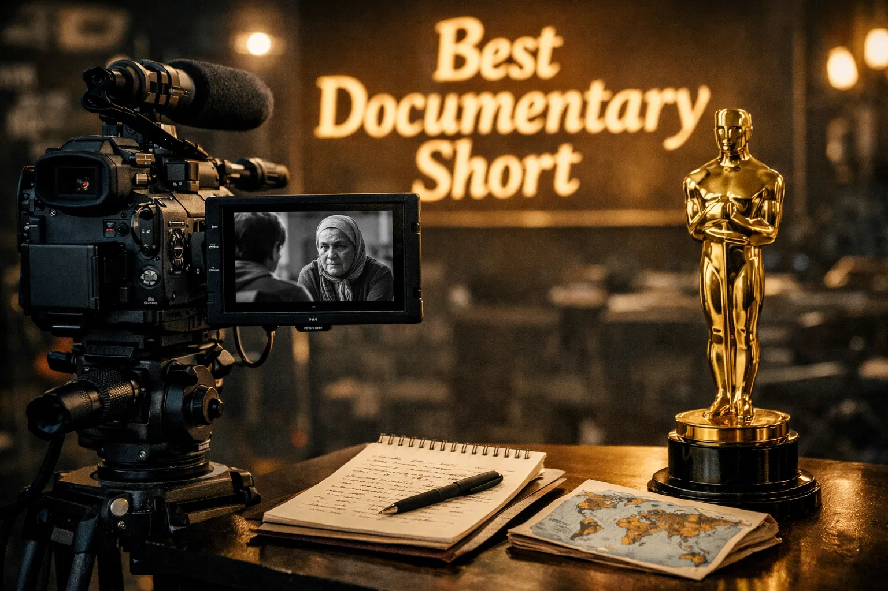
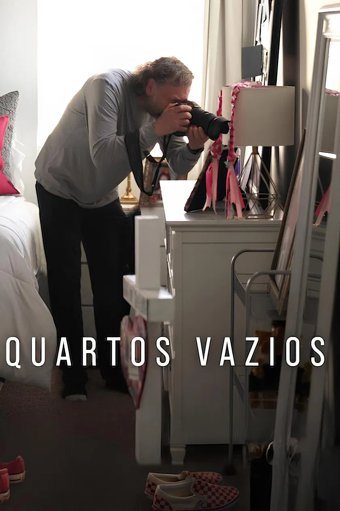
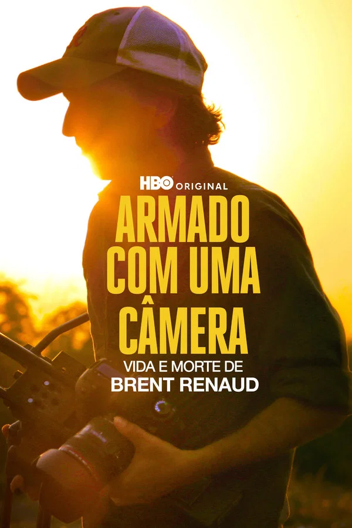
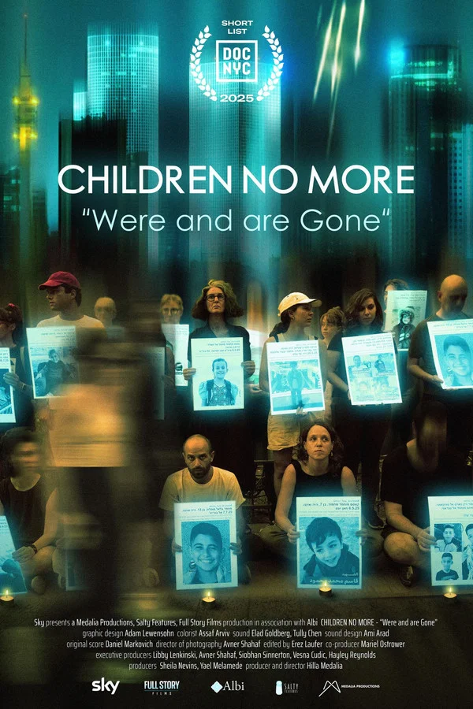
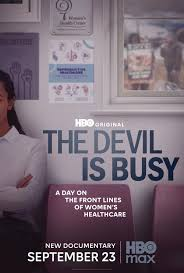
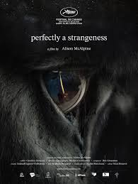

98th Annual Academy Awards
Melhor Curta Documentário
Conheça os candidatos à Premiação do Oscar 2026 por Melhor Curta Documentário.

Vencedor
All the Empty Rooms
Direção: Joshua Seftel
O Conteúdo: O filme explora prédios de luxo mantidos vazios para especulação enquanto a população de rua cresce ao redor. A narrativa foca no contraste entre o silêncio desses espaços e o barulho das vidas marginalizadas.
Destaques: A cinematografia estática e melancólica. É um documentário observacional que deixa a arquitetura e a ausência falarem sobre a desigualdade.

Armado com uma Câmera: Vida e Morte de Brent Renaud
Direção: Craig Renaud
O Conteúdo: Utilizando filmagens de arquivo inéditas e entrevistas com seu irmão Craig, o curta celebra o compromisso de Brent em dar voz aos vulneráveis em zonas de conflito, desde o México até o Oriente Médio.
Destaques: O uso de filmagens cruas feitas pelo próprio Brent, que mostram sua técnica de "cinema verdade" e sua empatia única com os personagens que filmava.

Children No More: "Were and Are Gone"
Direção: Hilla Medalia
O Conteúdo: O filme foca em crianças que foram forçadas a crescer precocemente devido ao deslocamento forçado e à violência. O título faz referência à sensação de que a inocência delas desapareceu sem deixar vestígios.
Destaques: O foco no testemunho direto. A montagem alterna entre a beleza das memórias infantis e a crueza da realidade atual, criando um apelo urgente pela paz.

The Devil Is Busy
Direção: Geeta Gandbhir e Christalyn Hampton
O Conteúdo: O curta mergulha na psicologia do medo e como figuras carismáticas exploram a vulnerabilidade econômica para pregar ideologias de ódio e paranoia sob o pretexto de proteção espiritual.
Destaques: O ritmo de suspense. O filme funciona quase como um thriller, utilizando áudios originais de reuniões desses grupos para criar uma atmosfera sufocante e reveladora.

Perfectly a Strangeness
Direção: Alison McAlpine
O Conteúdo: O curta utiliza imagens microscópicas e telescópicas para traçar paralelos entre o funcionamento do cérebro humano e as estruturas do universo, questionando nossa posição na escala da existência.
Destaques: O design de som imersivo e as imagens visualmente arrebatadoras. É um documentário "espiritual-científico" que busca provocar o maravilhamento e a introspecção no espectador.